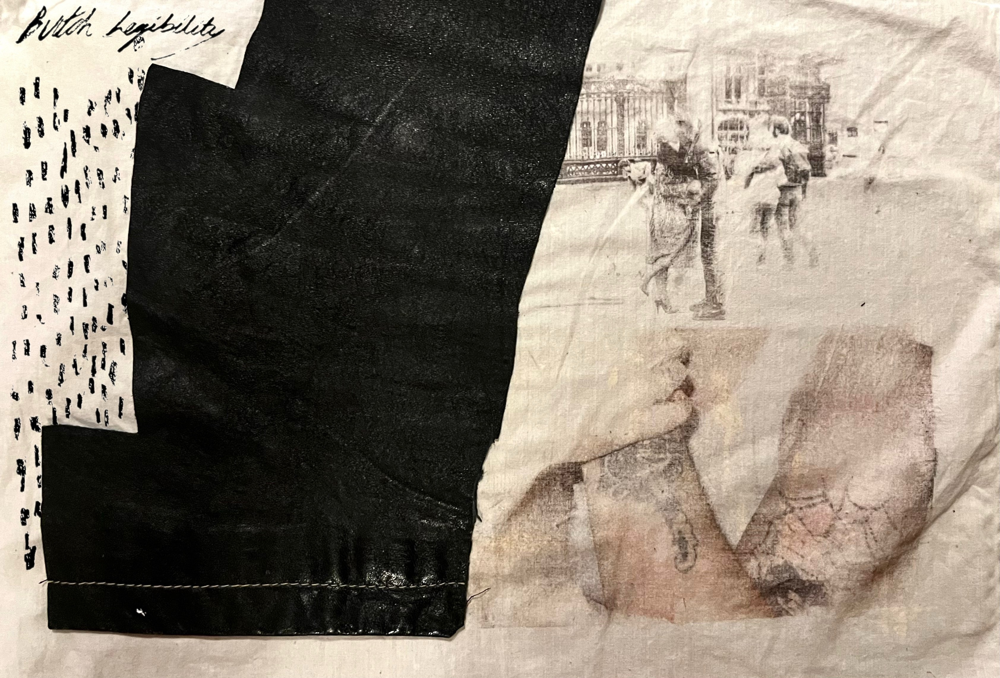
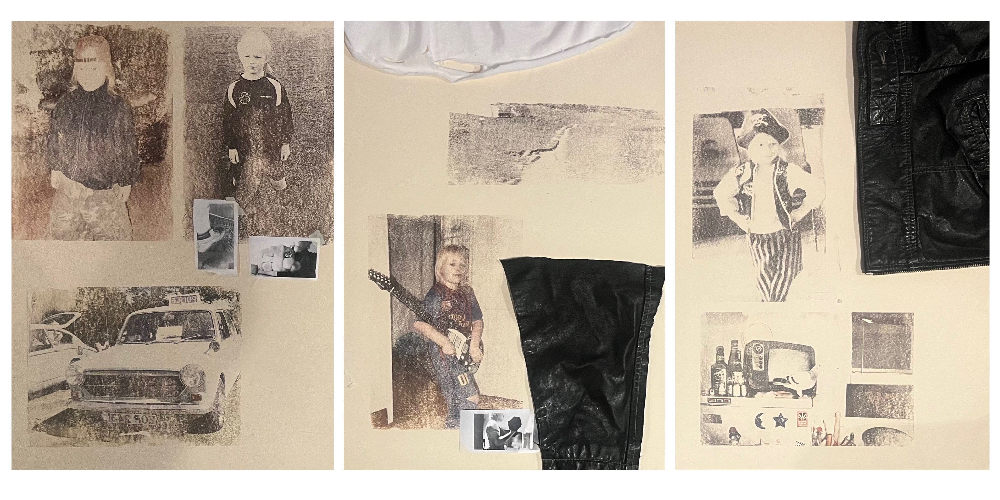
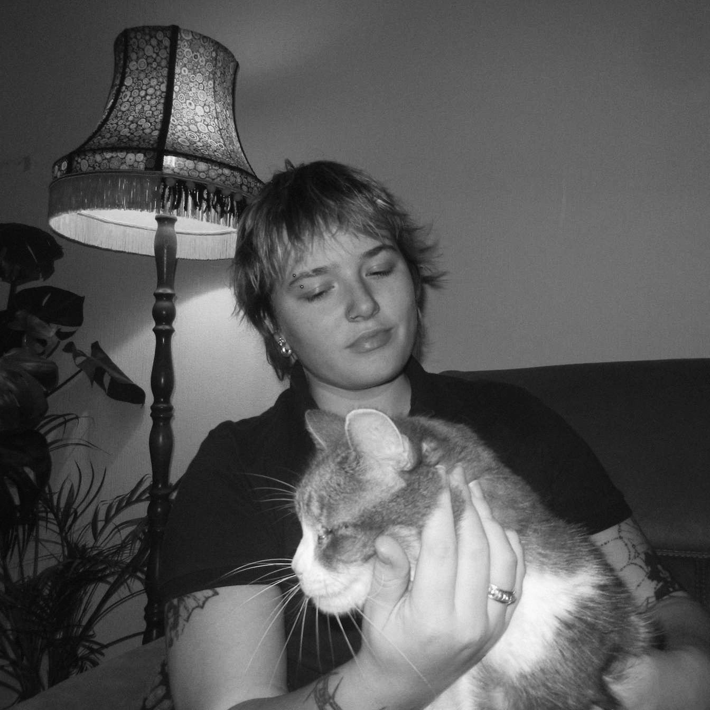

23960 A WHITEMORE
Mixed Media / 2026
65cm x 35.
Artist Portfolio
Mixed media artist working across identity, memory, materiality and archive.

Selected Work
Mixed Media / 2026
65cm x 35.

Mixed Media / 2026
9cm x 5cm.

Mixed Media / 2026
140cm x 90cm.

Mixed Media / 2026
70cm x 50cm.
About
mixed media, photography, collage and found materials.
Maddi Whitemore's practice explores butch identity, gender complexity, and the politics of representation. Her work responds to the paradox of butches as cultural pioneers who remain persistently underrepresented, using art to examine visibility, erasure, and the many ways gender is lived beyond binary definition. Working across a range of mixed media, she embraces the physical labor of making, incorporating processes such as hammering nails, sawing wood, and using plaster to build textured works. This material engagement is central to her practice, allowing form and process to mirror the constructed and deeply felt nature of identity.
